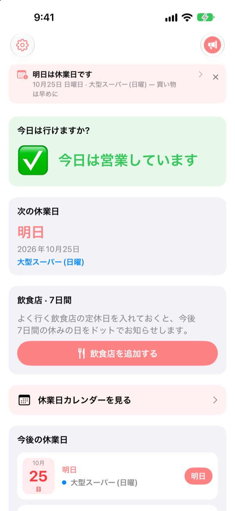
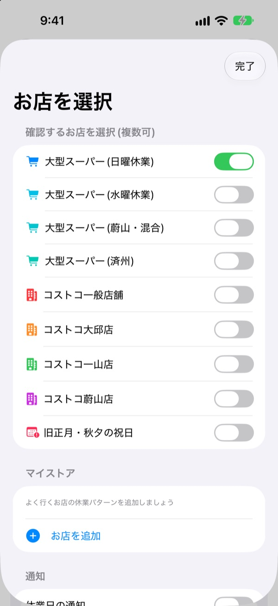
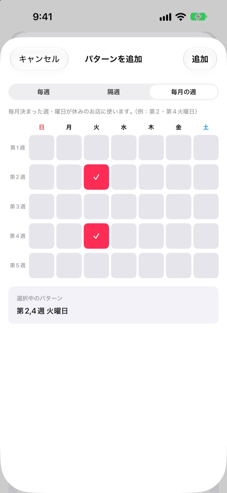
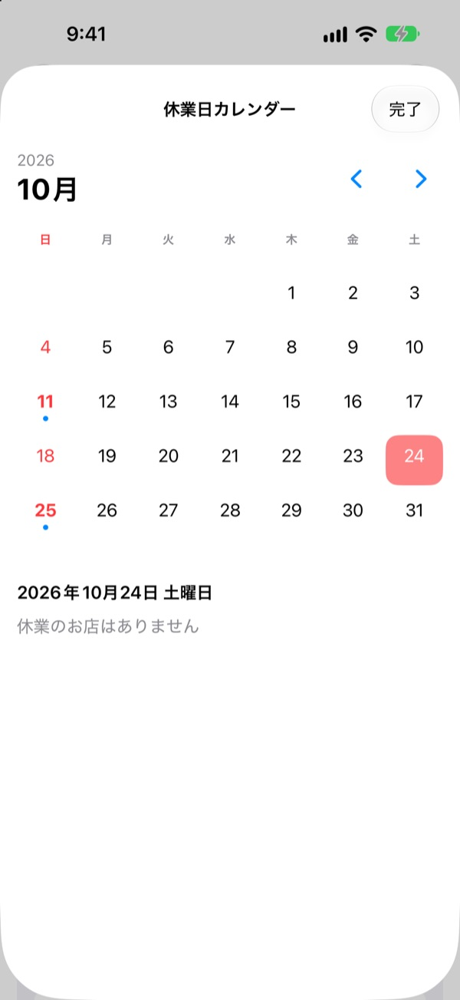
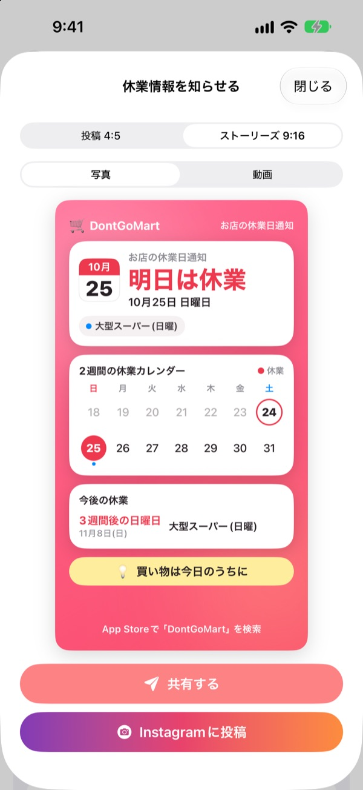

お店に行く前に、
今日の営業を確認
アプリを開くと、選んだお店が今日営業しているかが真っ先にわかります。休業日が近づくと前もってお知らせするので、閉まったお店の前で引き返すことはもうありません。
すべての機能が無料。アカウントも広告もありません。

いつものお店で試してみましょう
お店を選ぶと、今日営業しているか、次の休業日がいつかがすぐにわかります。アプリと同じルールで計算しています。
買い物袋を持って行ったら閉まっていた、なんてことはありませんか？
韓国の大型スーパーの義務休業日は、第2・第4日曜日のところもあれば水曜日のところもあり、蔚山や済州はまた別です。コストコは店舗ごとに違います。DontGoMartは、あなたが行くお店のルールで休業日を計算して、まず今日行けるかどうかを教えてくれます。
地域ごとに違う休業日にも対応
日曜休業のお店、水曜休業のお店はもちろん、蔚山や済州のように休業の曜日が異なる地域も選べます。コストコは一般店舗と大邱店・一山店・蔚山店を個別に選べます。
旧正月と秋夕の当日休業も表示されます。複数のお店をまとめて登録できます。

近所のお店も、お気に入りの飲食店も
一覧にないお店は、毎週、隔週、または毎月何週目の何曜日に休むかを決めて、自分だけのお店として登録できます。
飲食店は、Naverマップで共有したリンクを貼り付けるか、お店の情報画面のスクリーンショットを選ぶだけで定休日が自動で入力されます。写真の中の文字は端末の中だけで読み取ります。

忘れないように通知とウィジェットで
休業日の1日前・2日前・3日前・7日前から選んで、好きな時刻に通知を受け取れます。休業日の前日には、今日が買い物にぴったりの日だとあらためてお知らせします。
ホーム画面とロック画面のウィジェットで、直近の休業日、今週の日曜日の営業状況、飲食店の7日間の休みをすぐ確認。カレンダーでは1か月分の休業日をひと目で見られます。

家族のトークにカード1枚で
休業のお知らせを、2週間分のカレンダーと買い物のヒントが入ったカードにして送れます。Instagramの投稿やストーリーズのサイズ、短い動画にも対応しています。

はじめ方は3ステップ
- 1
お店を選ぶ
よく行くお店と地域をオンに。いくつ選んでもかまいません。
- 2
通知をオンにする
何日前の何時に知らせるかを決めます。
- 3
ウィジェットを置く
ホーム画面やロック画面で、アプリを開かずに確認できます。
お店ごとの休業ルール
- 大型スーパー(日曜休業)
- 第2・第4日曜日・ほとんどの地域
- 大型スーパー(水曜休業)
- 第2・第4水曜日・京畿道の一部、清州
- 大型スーパー(蔚山)
- 第2水曜日、第4日曜日
- 大型スーパー(済州)
- 第2金曜日、第4土曜日
- コストコ一般店舗
- 第2・第4日曜日
- コストコ大邱店
- 第2・第4月曜日・大邱店、大邱革新店
- コストコ一山店
- 第2・第4水曜日
- コストコ蔚山店
- 第2水曜日、第4日曜日
- 旧正月・秋夕
- 当日休業
義務休業日は自治体の条例で変わることがあります。実際と違う場合は、下記のメールでお知らせください。
よくある質問
休業日が実際と違います。
大型スーパーの義務休業日は自治体の条例によって地域ごとに異なります。設定で地域に合ったお店（日曜休業、水曜休業、蔚山、済州など）を選んでいるか確認してください。それでも違う場合は、お店の名前と地域をメールで教えていただければ、確認して反映します。
一覧にないお店はどうすればいいですか？
自分だけのお店として追加できます。毎週、隔週、または第2・第4日曜日のように何週目の何曜日に休むかを決めて保存してください。
飲食店の定休日がうまく入力されません。
Naverマップのリンクから取り込むときは、お店のプレイスページに定休日が書かれている必要があります。スクリーンショットから取り込むときは、休業に関する文言が画面に写るように撮ってください。入力された内容は保存する前に修正できます。
通知が届きません。
iPhoneの設定 > 通知 > DontGoMartで通知が許可されているか、アプリ内で休業日の通知がオンになっているか確認してください。
ウィジェットが更新されません。
アプリを一度開くとウィジェットの情報が更新されます。それでも変わらない場合は、ウィジェットを削除してから追加し直してください。
チップとは何ですか？
DontGoMartのすべての機能は無料です。コーヒー、ケーキ、食事のチップは開発者を応援するためのもので、送るとお礼のメッセージと、累計回数が入ったサポーターバッジが表示されます。
支払い（返金など）はどこに問い合わせればいいですか？
App内課金はAppleが処理しているため、返金はAppleの問題を報告するページ（reportaproblem.apple.com）からリクエストできます。そのほかのご質問はメールでどうぞ。
個人情報はどう扱われますか？
アカウントはなく、広告やトラッキングツールも使っていません。スクリーンショットの文字も端末の中だけで読み取ります。詳しくは下記のプライバシーポリシーをご覧ください。
ご質問やご意見は hyunho.lee.1993@gmail.com までお送りください。通常1〜2日以内にお返事します。